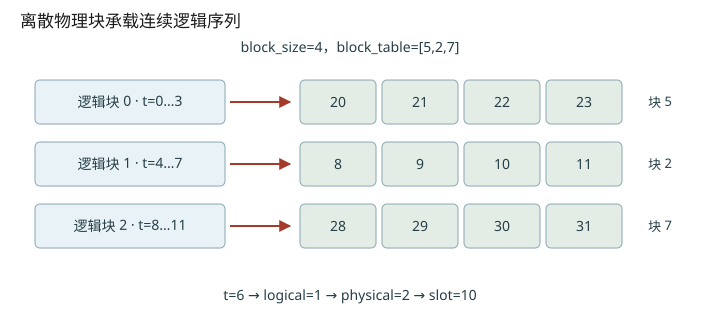
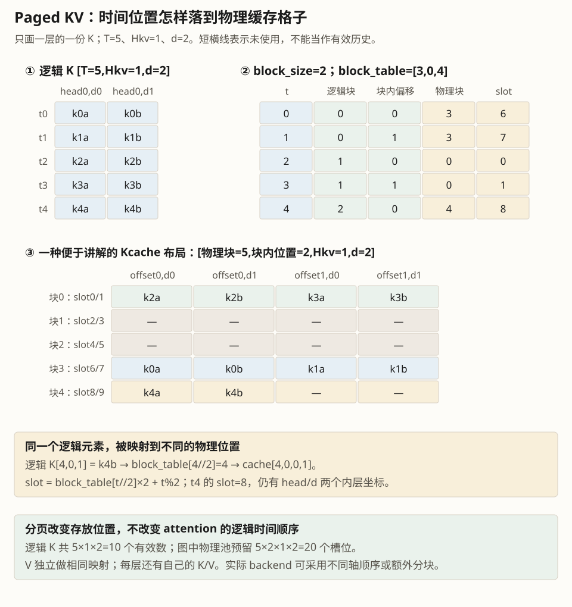
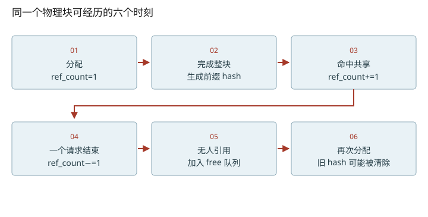

深入篇 25 / nano-vllm 源码追踪 · 2026-11-08
从逻辑 token 到物理槽：块生命周期与前缀命中
手算 block_table / slot_mapping，并区分空闲、可复用缓存、正在被引用这三个状态。
手算 block_table / slot_mapping，并区分空闲、可复用缓存、正在被引用这三个状态。

两个映射不能互相替代
physical_block = block_table[logical_block]
slot = physical_block × block_size + (t mod block_size)
block_table按请求描述整段历史在哪里；slot_mapping按本轮token描述新KV往哪里写。K/V张量还有层、头、维度这些轴，slot不是完整字节地址。例子t=6、B=4、table=[5,2,7]，先取table[1]=2，再算2×4+2=10；不要误用逻辑块号乘B。
完整前缀的身份由历史决定
hash_blocks只给已经计算完成的整块登记hash，身份包含前一个完整块hash与本块token IDs。相同后缀token在不同前缀下通常对应不同K/V，所以不能只哈希当前块。can_allocate除hash查找外还比较本块token_ids，并在首个miss后停止扩展命中前缀。更复杂的生产系统还要考虑模型、adapter、多模态和隔离信息；本地最小实现没有把所有这些约束都纳入。
free块可以保留旧内容
引用计数归零时，块加入free队列，hash和token_ids未必立即清除。若在被覆盖前再次命中，可以从free队列移除并激活；若分配给其他内容，_allocate_block会清理当前仍指向该块的旧hash映射并reset元数据。不要看到free就断言“缓存miss”，也不要因为hash存在就断言可以无条件读取。
为什么最后一块不复用
此固定版本can_allocate遍历range(seq.num_blocks−1)，刻意不把请求最后一块作为可命中前缀。这包括最后一块恰好填满的情况：模型仍需某个末位置hidden/logits来采样，新请求仅拿到KV不能直接恢复最后hidden。该实现选择重新计算最后一块；不能把它说成普遍算法定理，其他实现可能选择重算最后token等策略。
容量与碎片
一个请求独占的最后一块最多有B−1个空槽；共享前缀减少重复有效KV，不能消除一切页尾浪费。若请求需要3块、当前只有2个free块，chunked prefill预算再小也可能无法入场，因为这个nano实现先分配请求当前全部块。
把维度变化拆到每一步
- 请求内t先映射到逻辑块，再查物理块。
- packed行号、RoPE position、KV slot是三个不同的索引。


改变变量，验证直觉
启用 JavaScript 后可交互；上面的图和下面的手算练习始终可读。
数值练习：先算，再核对
块大小4，A有token0…9，block_table=[5,2,7]。写出本轮位置3…6的slot_mapping，再解释为什么它不连续。B命中A前两个完整块时，写出对应ref_count的变化。
闭卷检索
不要回看正文。答错后先解释原因，再重新打开这一课。
把结论落到源码
- 圈出 _allocate_block 清hash的条件，说明为什么还要检查映射仍指向当前block_id。
- 沿can_allocate → allocate比较“已被使用的命中块”与“free里的命中块”对空闲数的不同影响。
以下行号由本地 vendor 文件生成；上游链接固定完整 commit，离线摘录可直接打开。
- nano-blocks：nanovllm/engine/block_manager.py L26–120 · 上游证据
- nano-prefill-inputs：nanovllm/engine/model_runner.py L129–170 · 上游证据
- nano-store-kv：nanovllm/layers/attention.py L11–40 · 上游证据
优先阅读：本地 BlockManager 与 PagedAttention §3。
速查：形状与公式 · 三框架映射 · 术语表 · 复习与实战路线 · 4070 Ti本地实验
只在当前浏览器保存自评；不会自动写成已掌握的 learning record。